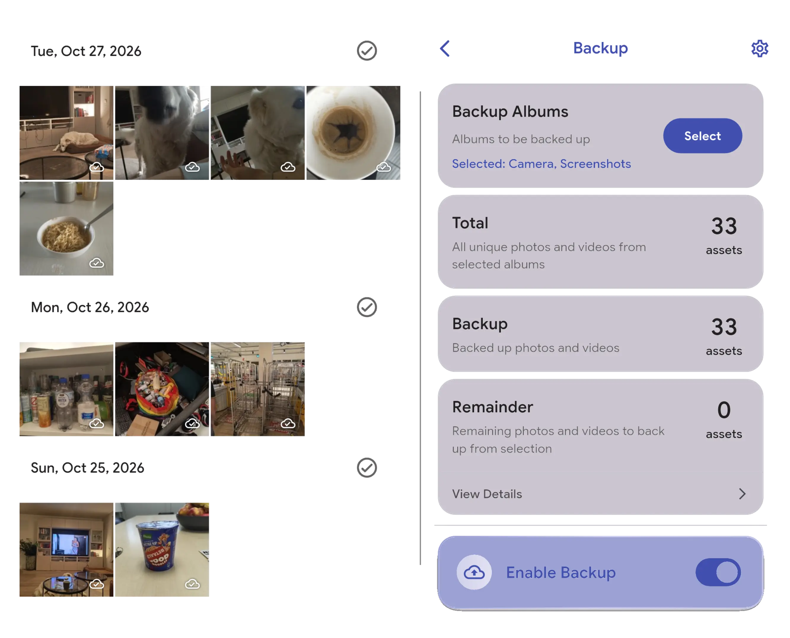
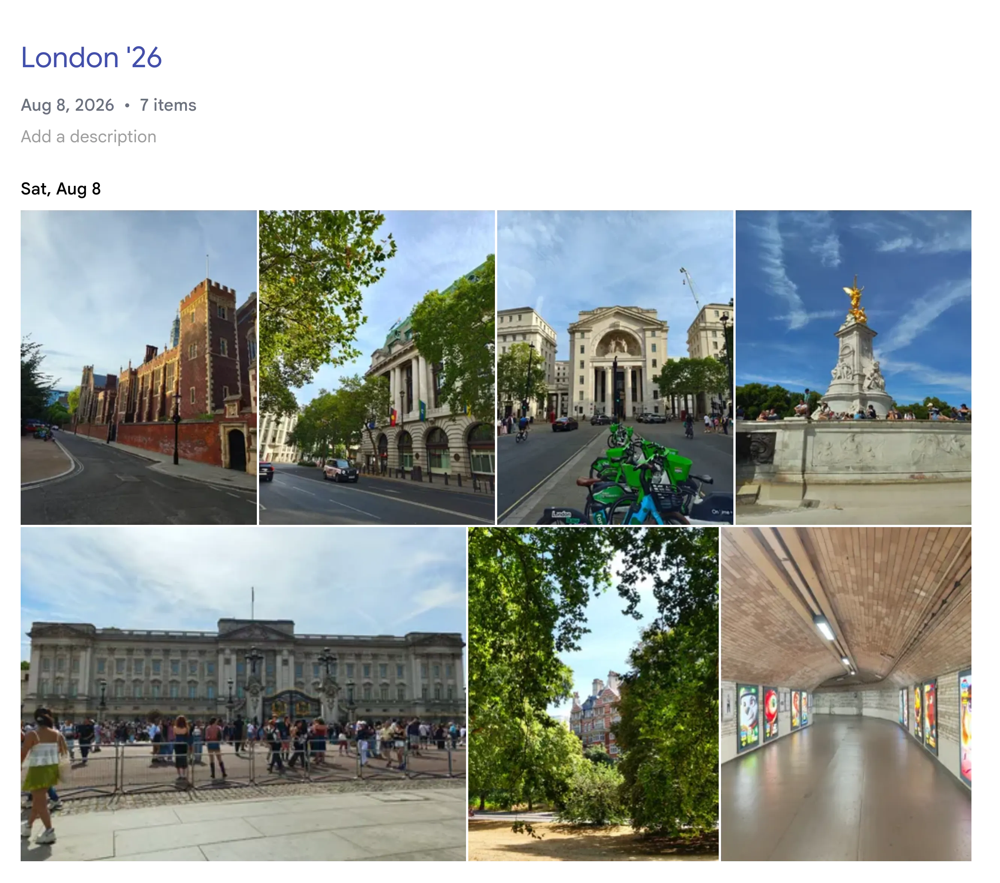

Backups that just happen
Install the app, log in, turn on backups and that’s the last time you think about backups. Every photo and video on your phone automatically gets synced with the server as soon as you connect to WiFi. Everything lands on a timeline you can scroll through by day, and because the original is safe you can remove it from your phone clearing up space. No more notifications from Google asking for more storage. Your only limit is the size of the drive(s) you own.

Search that runs on your own machine
Immich doesn’t just store your photos, it understands them and does it fully locally. Your photos never leave your server. It scans faces and groups them, where you can name each face for easy searching. It detects objects, scenes and even text in your images. It also stores metadata like GPS and dates. All of this makes it really easy to find “that one image” from 2 years ago. You can also browse by person, by place, on a map, or jump straight to a date.
Albums, people and sharing
Creating albums works the exact same as in Google Photos. Just create the album and add your pictures to it. If you have multiple users on the server you can share albums between users, allowing all members to add to the album. This year I went to London with my family and I shared an album, which resulted in a real fun collection of pictures that we are easily able to share with other family members. You can share photos and albums with a public link, making them accessible to anyone, though this is only possible if you set up a public domain (refer to Getting Started step 5). Immich also has the default folders favorites, archive, locked folder and trash. It supports Live Photos, motion clips and RAW files.

Compared to Google Photos
For the core job Immich is a drop-in replacement. It has back-ups, browsing, searching, organization and sharing. Though there are some trade-offs: you give up Google’s AI editing tools (which might be a positive for you), the ease of use and the comfort and safety of a company keeping your photos safe. However, the pros are big: no subscription, no ads, no scanning your library for profiling and complete control over your photos. If what you mainly want is your photos safe, organized and private, you won't miss the rest.